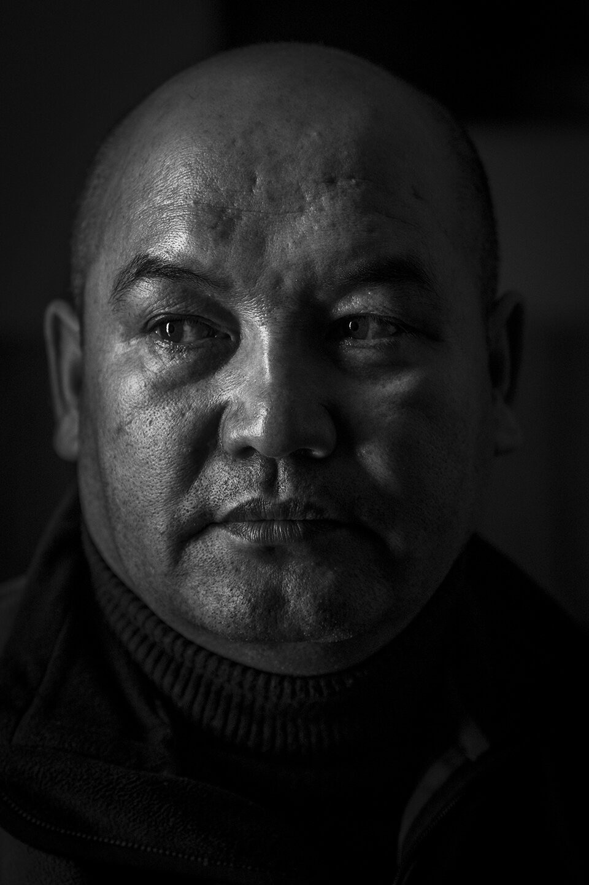
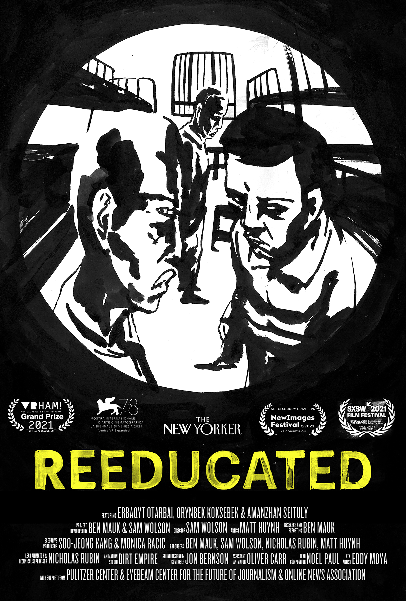
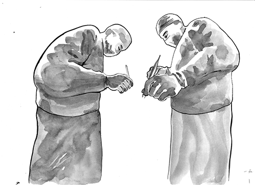
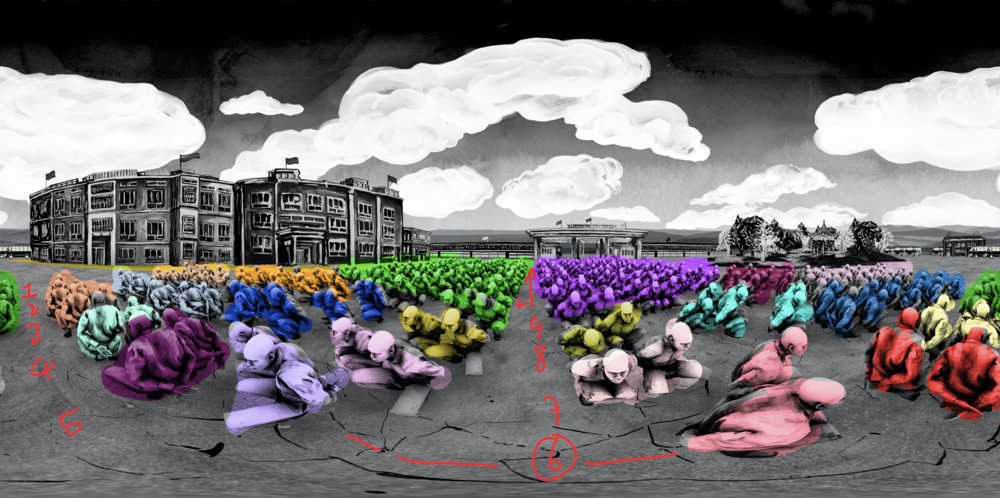

Roles: Director · Co-Developer · Producer
Reeducated takes viewers inside one of Xinjiang's "reeducation" camps, guided by the recollections of three men who were imprisoned together at the same facility. Using over a dozen hours of first hand testimony, brush and ink animation and ambisonic sound, the VR film reconstructs the experience of detention and political reeducation. As many as a million people were held in a vast network of "reeducation centers." It is likely the largest mass-internment drive of ethnic and religious minorities since the Second World War. The film was supported by Pulitzer Center on Crisis Reporting, Eyebeam and The Online News Association. The film has shown at 18 film festivals thus far, won top awards from three as well as two ONA awards for the entire multimedia package.
Watch ReeducatedThe film was the second part of the most ambitious immersive interactive feature that The New Yorker has ever made. Part one of the project "Inside Xinjiang's Prison State" launched on The New Yorker's website in early March 2021.
We worked on this collaboration with The New Yorker for over the past 18 months. Ben Mauk, Matty Huynh and I traveled to Kazakhstan in early 2019 just before the pandemic restricted travel to speak to over a dozen former detainees and victims. Moving between "reeducation camps", and the surveillance state rolled out across Xinjiang the second part of the project explores the scope of China's campaign of persecution against ethnic and religious minorities.

"Reeducated is as haunting as it is artistically impressive. The film's detailed black and white ink illustrations, hand-drawn by artist Matt Huynh, are intricate and gorgeous, and lace together a poignant, heartbreaking depiction of the narrators' experiences. … It's impossible to look away."
"Reeducated seems like an obvious frontrunner for the Emmy in Outstanding Interactive Program; the medium injects immediacy into stories of persecution that might otherwise seem tragic but remote."
"Despite extensive news reporting about China's secretive 'reeducation' camps, it is difficult to imagine what it's like for more than a million Uyghur, Kazakh and other minorities detained inside. [Reeducated] aims to put you in their shoes — almost literally — with the help of virtual reality technology."
"This is a work of true journalism — the kind of journalism that can make a difference and change you at your core. But Reeducated is not only a deep and shocking reconstruction of a situation that most of us are unaware of. It is also a beautiful piece of art, both as an interactive feature and as a VR film."

"Reeducated offers a glimpse into a horrifying world obscured from public view. … It's a striking piece of 360 cinema that makes a clear argument for the unique affordances of immersive formats for telling stories, establishing a powerful logic and vocabulary through the use of composition, scale, pace, and perspective."
Featuring Erbaqyt Otarbai, Orynbek Koksebek, Amanzhan Seituly
Project Developed by Ben Mauk, Sam Wolson
Director Sam Wolson · Artist Matt Huynh · Research and Reporting Ben Mauk
Executive Producers Soo-Jeong Kang, Monica Racic
Lead Animator and Technical Supervisor Nicholas Rubin / Dirt Empire
Designer / Composer Jon Bernson · Senior Editor Brian Redondo
Producers Ben Mauk, Sam Wolson, Nicholas Rubin, Matt Huynh
Assistant Animator Oliver Carr · Lead Compositor Noel Paul · VFX Artist Eddy Moya
Story Edit Ben Mauk, Sam Wolson · Animation Studio Dirt Empire
Color Grading Noel Paul · Ink Bleed Matvey Rezanov · Artist Assistant M. J. Steele
English-Language Recording Engineer Asqat Yerkimbay
Kazakh/English Audio Asqat Yerkimbay, Baubek Sagyndyq
English-Language Voice-Over Artists Nurbek Matzhani, Asqat Yerkimbay, Anonymous
Kazakh-Language Recording Engineer Sam Wolson
Transcription and Translations Dauren Aben, Anonymous
Map Locations of Detention Centers Nathan Ruser, Australian Strategic Policy Institute
Fact Checker Linnea Feldman Emison · Singing Erbaqyt Otarbai
Special Thanks Gene Bunin, The Xinjiang Victims Database, Nathan Ruser, Darren Byler, Sonya Teich, Christina Gossmann, Carleen Coulter
